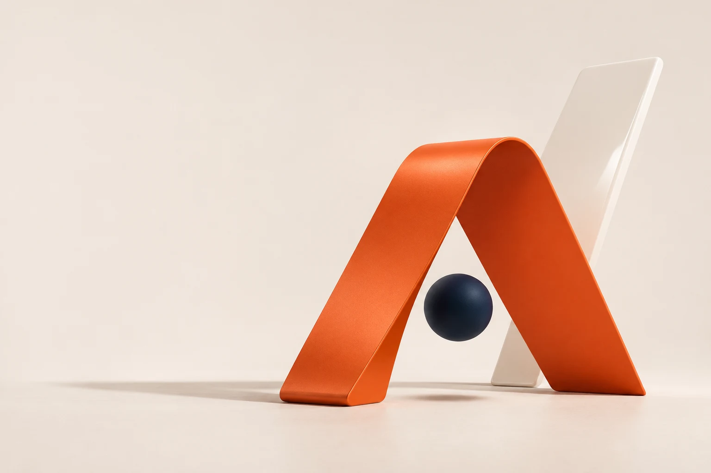

Actual screenshot · test version
In preparation
AJS American Pool
8-ball, 9-ball, 10-ball & 14.1
Choose your group in 8-ball or follow the numbered sequence in 9-ball. Leave the cue ball in position for your next shot.
Privacy for this game ↗INDEPENDENT STUDIO · GAMES & APPS
Games for your passions. Apps for everyday life. AJS Studio brings simple, thoughtfully crafted mobile experiences to life.
Created in Morlaix, Brittany

IN THE SPOTLIGHT
In development · Android
The club spirit.
In your pocket.
Play, practise or referee a match. Blackball by AJS Studio combines an English pool table with Blackball and Ultimate Pool rules, practice and a match timer.
Line up your shot, set the power and explore spin. Play against the computer or get ready for your next session at the club.
Explore table reading, shot paths and cue-ball position through exercises and a tactical coach.
A clear shot timer, extensions and alerts to help referee matches at the club.
Private test build. The public release is in preparation.
Our first projects explore precision sports. More games and apps will follow.
Actual screenshot · test version
In preparation
8-ball, 9-ball, 10-ball & 14.1
Choose your group in 8-ball or follow the numbered sequence in 9-ball. Leave the cue ball in position for your next shot.
Privacy for this game ↗Actual screenshot · test version
In preparation
6 reds & 15 reds
Alternate reds and colours to build a break. Choose a shorter six-red frame or play with all fifteen reds.
Privacy for this game ↗Actual screenshot · test version
In preparation
Straight rail, 1 cushion & 3 cushions
On a pocketless table, send your cue ball into both object balls. Try straight rail, one-cushion or three-cushion play.
Privacy for this game ↗Actual screenshot · test version
Darts scores & matches
Throw at your own board and enter your three darts. Dart Club keeps score and moves to the next player, from 501 to Cricket.
Download on Google Play ↗Privacy for this game ↗THE STUDIO
AJS Studio is an independent studio based in Morlaix, Brittany. We imagine mobile games and apps around everyday needs and personal passions.
Our work starts with a simple idea, then takes shape through testing and feedback. Billiards begins this adventure. The studio will explore many other worlds.
A QUESTION OR SOME FEEDBACK?
A comment about a game or a question about the studio? Get in touch.